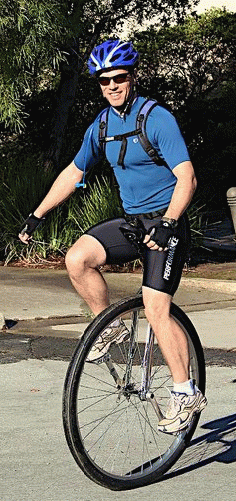

Week 2 Results: OLH
21 Oct 2006
|
2006 Low-Key Hillclimbs Week 2 Results: OLH 21 Oct 2006 |
|  |
| Steve Nash gets ready to climb. photo by Sheri Greenspan |
Spectacular late-October sunshine greeted the 53-rider, 105-wheel group as we gathered in Portola Valley for this, the second successful week of the 2006 Low-Key Hillclimbs.
Five separate groups each set out for the short promenade to the base of Old La Honda, where Patt Baenen served as the gatekeeper for the day's low-key fun. In Group 1, early promises of a steady pace were quickly and definitively dispatched as the group took off at a ferocious pace, sending your friendly webmaster well off the back, a careful eye on the HAC-4 power estimator to tell me what my legs already knew -- there was no way I was going to ride that pace and survive the 1290 vertical feet OLH has in store.
Scott Frake of WAV-ARA had no such problems, however, registering the day's briefest climb with his very solid time of 16:33. The Low-Key record of 16:00 set by Tracy Colwell in 1996 remained intact, however, with Tracy, the winner of Montebello, missing this year's OLH festivities. This week's women's turn-out was slightly stronger than last week, with 4 accepting the challenge of OLH's slopes, with the quickest ascent registed by a very-not-out-of-shape (despite her category) Ingrid Erkman of TNT in an excellent 23:12.
Highlight of the day, however, was Steve Nash on his unicycle, who scored a 27:52, leading the day's time-wheel product ranking. Diablo?
Low-Key alumni Roy and Julia Ames showed up at the finish on their Honda motorcycle. No, Low-Key does not have a motorsport competition this year.
Special thanks to our volunteers:
Next week: Low-Key charts new territory with the north slope of Diablo, in the East Bay. Be there, and bring your friends!
"Being residents of Portola Valley and enjoying cycling, we were so happy to see the Low-Keys and very much appreciated the small group starts used. It was a great way to be able to have fun, and it was safe and well organized, and thoughtful." -- Ellie Bullis and Bill Pendleton
Thanks to coordinator Judy Colwell, with help from Patt Baenen, Carola Berger, Fred Butts, Sheri Greenspan, Marianne Lipanovich, and Kevin Winterfield for making today's climb possible!median time = 20:24
pl # rider team category time score 1 43 Scott Frake WAV-ARA Bald 16:33 123.31 2 84 Ryan Sherlock Mad/Ireland 35+ 16:59 120.17 3 80 Andrey Revyakin 30+ 17:01 119.93 4 17 Brian Edwards Hell Riders 25-29 17:13 118.54 5 19 Menso de Jong Santa Cruz Syndicate Junior 17:18 117.97 6 83 Kieran Sherlock AV: Old Guys Finish Open 17:19 117.85 7 61 Jens Heycke Me 45+ 17:23 117.40 8 36 Bill Davis Webcor/Alto Velo 4 17:32 116.40 9 39 Clark Foy San Jose Bike Club 40+ 17:33 116.29 10 62 Daryl Spano San Jose Bike Club 40+ 17:36 115.96 11 74 Dominic Giampaolo Webcor/Alto Velo One-Handed Gimp 17:42 115.30 12 1 Dan Connelly TNT 3 17:43 115.19 13 48 David Kelly Webcor/Alto Velo 4 17:53 114.12 14 20 James Porter Western Wheelers Out Of Shape Dads 18:04 112.96 15 45 Rupert Brauch WAV-ARA 3 18:14 111.93 16 65 Martin Voogel Webcor/Alto Velo 35+ 18:21 111.22 17 75 Kenneth Norton Pen Velo/Kondra 35+ 18:27 110.61 18 102 James Hill AV: Old Guys Finish 50+ 18:35 109.82 19 104 Tore Nauta Webcor/Alto Velo 30+ 18:43 109.04 20 16 Peter Mehlitz 45+ 18:54 107.98 21 40 Geo Kitta Pen Velo/Kondra 50+ 19:07 106.76 22 82 Phil Mehlitz Easton/Specialized Beach Bum 19:16 105.93 23 81 Ramon Alarcon San Jose Bike Club 4 19:25 105.11 24 88 Peter Tapscott AV: Old Guys Finish 50+ 19:58 102.21 25 4 Fred E. Stamm Pen Velo/Kondra 50+ 20:03 101.79 26 85 Chris Soukup San Jose Bike Club 35+ 20:18 100.53 26 35 Ron Brunner Commuter Commuter 20:18 100.53 28 101 Dave Johnson Stanford Cycling 20-24 20:31 99.47 29 78 Alex Kramer Western Wheelers 5 21:19 95.74 30 6 Greg Dougald AV: Old Guys Finish 40+ 21:26 95.22 31 63 Michael Ma Safeway 6 21:29 95.00 32 67 Martin Hyland Western Wheelers 50+ 21:36 94.48 33 11 Peter Merril Adobe 50+ 22:04 92.48 34 73 Barry Burr Men with Guts 45+ 22:15 91.72 35 72 Matthew Larson Hopefully fast 22:21 91.31 36 90 H. William Mirbach Pen Velo/Kondra 55+ 22:30 90.70 37 70 Bob Parker AV: Old Guys Finish 50+ 22:39 90.10 38 34 Stephen Fong San Jose Bike Club 5 22:55 89.05 38 86 Alex Matthews No Team Cotter Pin 22:55 89.05 40 64 Keith Devlin Team Devlin 59+ 22:58 88.86 41 69 Rafael Rius GA Riders Slacker 24:01 84.98 42 103 Toby Booth Webcor/Alto Velo 30+ 24:21 83.81 43 47 Gavin McRaley Webcor/Alto Velo 4 24:52 82.07 44 15 Rich Brunner Cruzie 39ish 26:02 78.39 45 49 Adam Tow Blubber Busters Infinity 26:04 78.29 46 10 Dick Robinson TNT 59+ 26:58 75.68 47 77 Jorge Chang Blubber Busters Infinity 27:07 75.26 48 66 Eric Roodhouse SVTC 27:35 73.99 49 79 Steve Nash Unicycle 27:52 73.24 50 76 Derek Tumulak Blubber Busters Infinity 29:47 68.52 51 89 JT Conklin Identity Engines 35+ 31:03 65.73 52 8 Craig Swarthout Old 51 32:03 63.68 53 38 Neil Bliss Platypus Racing Heavyweight 34:47 58.67 54 41 Kwan Low The Cutters 5 34:53 58.50
median time = 27:05
pl # rider team category time score 1 5 Ingrid Erkman TNT OOSOL 23:12 116.74 2 7 Cheryl Hennessy Velo Bella 35+ 26:38 101.69 3 68 Stephanie Gruszunski Velo Girls 27:32 98.37 4 71 Marie Borselle Velo Girls 40+ 32:15 83.98
pl team score scoring 1 Webcor/Alto Velo 345.82 (Bill Davis, Dominic Giampaolo, David Kelly) 2 San Jose Bike Club 337.35 (Clark Foy, Daryl Spano, Ramon Alarcon) 3 AV: Old Guys Finish 329.89 (Kieran Sherlock, James Hill, Peter Tapscott) 4 Pen Velo/Kondra 319.16 (Kenneth Norton, Geo Kitta, Fred E. Stamm) 5 TNT 307.61 (Ingrid Erkman, Dan Connelly, Dick Robinson) 6 Western Wheelers 303.18 (James Porter, Alex Kramer, Martin Hyland) 7 WAV-ARA 235.24 (Scott Frake, Rupert Brauch) 8 Blubber Busters 222.08 (Adam Tow, Jorge Chang, Derek Tumulak) 9 Velo Girls 182.34 (Stephanie Gruszunski, Marie Borselle) 10 Mad/Ireland 120.17 (Ryan Sherlock) 11 Hell Riders 118.54 (Brian Edwards) 12 Santa Cruz Syndicate 117.97 (Menso de Jong) 13 Me 117.40 (Jens Heycke) 14 Easton/Specialized 105.93 (Phil Mehlitz) 15 Velo Bella 101.69 (Cheryl Hennessy) 16 Commuter 100.53 (Ron Brunner) 17 Stanford Cycling 99.47 (Dave Johnson) 18 Safeway 95.00 (Michael Ma) 19 Adobe 92.48 (Peter Merril) 20 Men with Guts 91.72 (Barry Burr) 21 Hopefully fast 91.31 (Matthew Larson) 22 No Team 89.05 (Alex Matthews) 23 Team Devlin 88.86 (Keith Devlin) 24 GA Riders 84.98 (Rafael Rius) 25 Cruzie 78.39 (Rich Brunner) 26 SVTC 73.99 (Eric Roodhouse) 27 Identity Engines 65.73 (JT Conklin) 28 Platypus Racing 58.67 (Neil Bliss) 29 The Cutters 58.50 (Kwan Low)